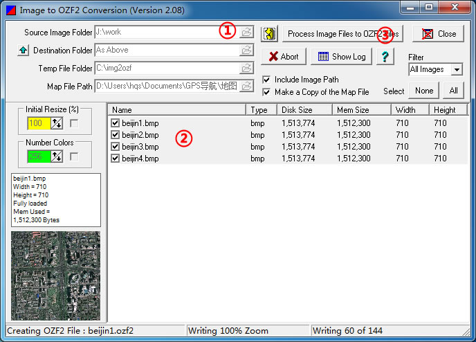
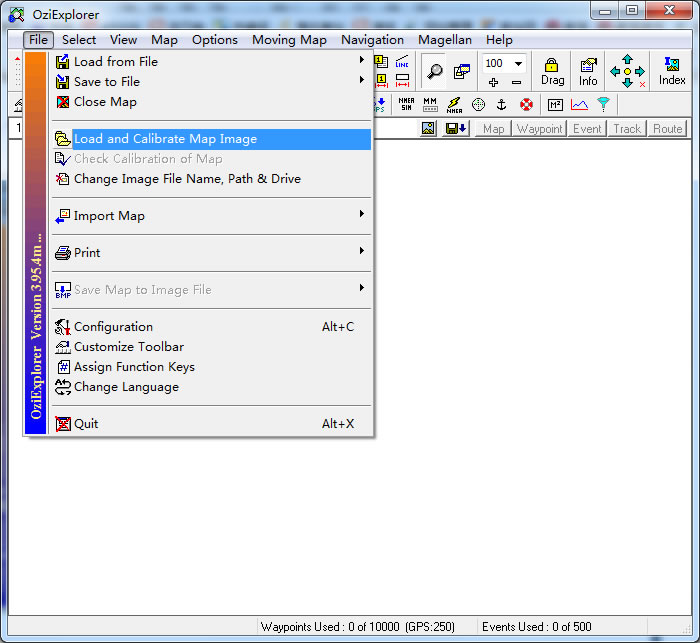
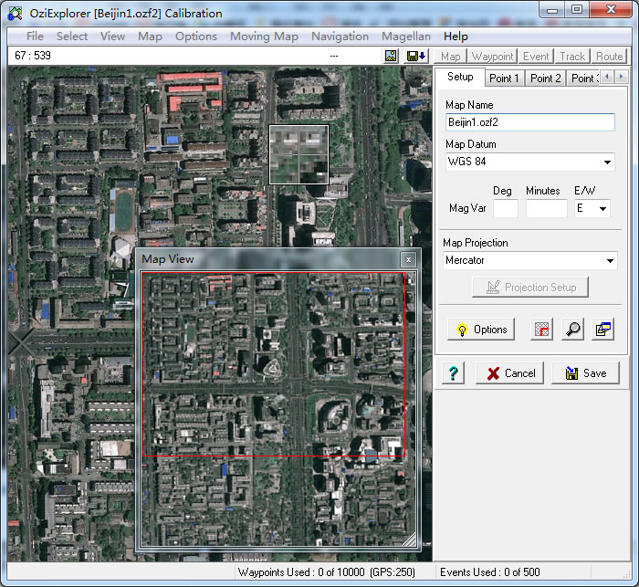
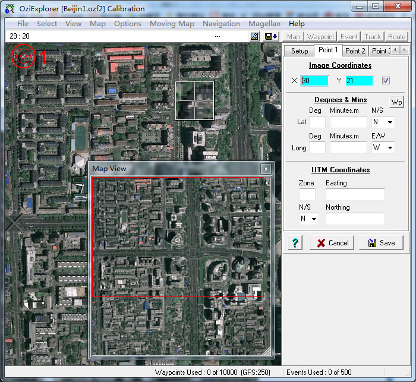
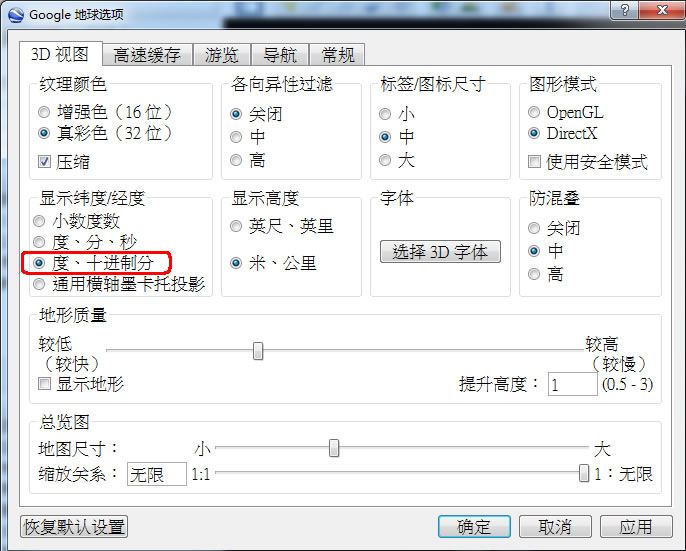
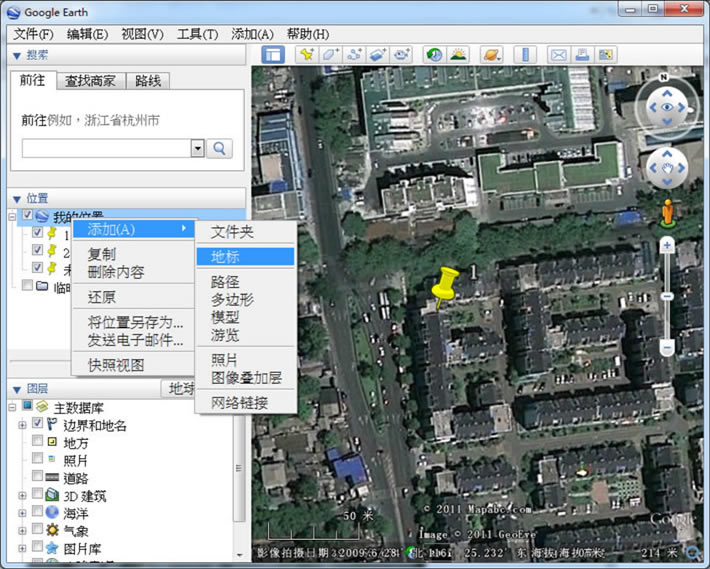
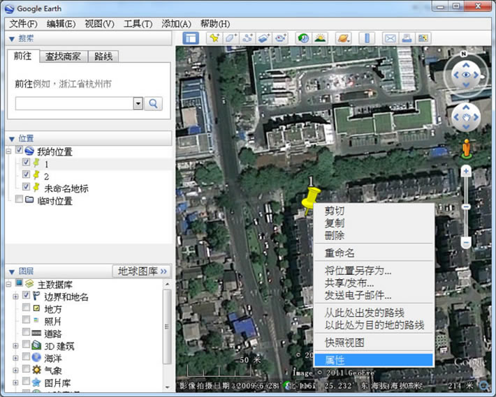
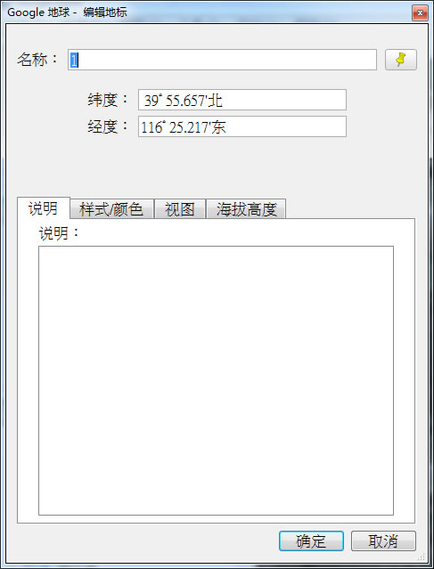
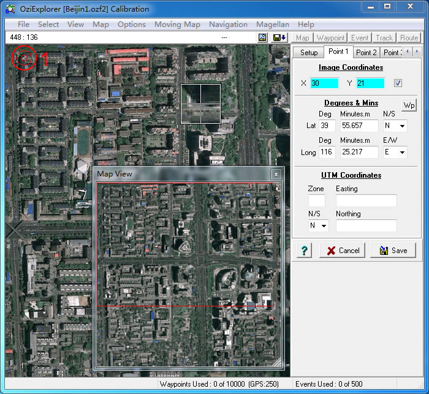
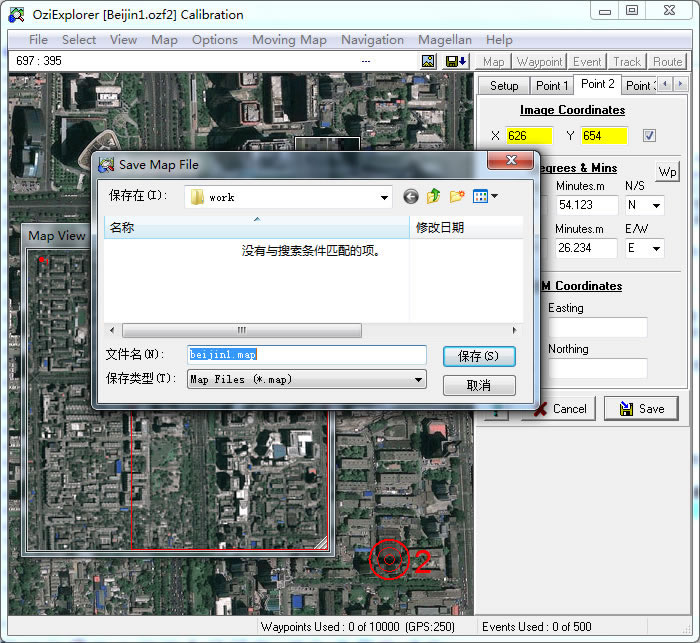

|
| 首页 | GeoTIFF | 今日花园Maps | OruxMaps | OZI | 资源 | 软件 | 联系 |
| 当前位置：OZI ---> OziExplorer地图制作教程 |
OziExplorer地图制作下面通过两个步骤来介绍OZI地图的制作：1) OZI地图格式转换 2) OZI地图经纬度坐标的校准 一、OZI地图格式转换 这一步很简单，用img2ozf软件将普通的BMP/JPG/GIF/TIF等格式的地图转换成ozf2格式的OZI地图，如下图所示： |

|
img2ozf软件转换图片格式的操作顺序如下： ① 选择地图图片所在目录。 ② 选择需要转换的地图。 ③ 点击“转换”按钮，软件自动把所有选上的地图转换成ozf2格式地图，转换后生成的ozf2格式地图与原地图在同一目录中，文件名也与原地图相同，只是文件后缀变成了ozf2。 二、OZI地图经纬度坐标的校准 OZI地图校准经纬度坐标要用PC电脑版OziExplorer来进行，校准点的经纬度坐标值可以通过谷歌地球(Google Earth)来获取。因为我们制作的谷歌卫星OZI地图与谷歌地球(Google Earth)的地图完全一样，所以可以容易确定地图上某一点的经纬度坐标。 理论上OZI地图只需要校准两个点的经纬度坐标，就能通过线性算法计算出其他任意点的经纬度坐标。而实际上由于谷歌卫星地图的精度是民用级别的，地图的坐标值都加入了一定的偏差，使得谷歌卫星地图的坐标值不是线性分布的。我们可以通过对OZI地图设置多个校准点的办法来提高地图的精度。OZI地图默认最多设置9个校准点，在极限情况下可以设置30个校准点。 校准经纬度坐标点的操作顺序如下： ① 运行PC电脑版的OziExplorer软件，通过菜单中的“file(文件)”-->“Load and Calibrate Map Image(载入并矫正地图图像)”把需要校准的ozf2格式地图调入，如下图所示： |

|
② Map Datum(地图基准)选择 WGS 84 项，Map Projection(地图投影方式)选择 Mercator 项。如下图所示： |

|
③ 点击“Point 1(点1)”标签，然后用鼠标在OZI地图上找一个比较容易辨别位置的地方点一下，校准点①的位置就确定并显示在OZI地图上了。校准点的像素坐标X、Y会自动填写上，而它的经纬度坐标需要我们人工填写。如下图所示： |

|
我们用谷歌地球(Google Earth)来获取校准点的经纬度坐标值，注意OZI校准经纬度坐标用的是“度.十进制分”格式，所以我们也把谷歌地球(Google Earth)的经纬度坐标设置成这种格式，这样便于我们填写校准点的经纬度坐标值。 谷歌地球(Google Earth)经纬度格式设置方法是：点击菜单中的“工具”-->“选项”，弹出设置对话框，将“显示经度/纬度”设置成“度、十进制分”格式，如下图所示： |

|
在谷歌地球(Google Earth)上通过辨别地形、建筑、颜色等方法找到我们校准点的位置。用鼠标右键点击窗口左栏的“我的位置”，在弹出的菜单中选择“添加”-->“地标”，在我们找到的校准点位置上添加一个地标。如下图所示： |

|
用鼠标右键点击“地标”，在弹出的菜单中选择“属性”。如下图所示： |

|
在地标属性窗口中有我们需要的校准点的经纬度坐标值。如下图所示： |

|
将得到的经纬度坐标值输入到校准点的经纬度输入框中，由于我国处于东经北纬地区，所以在纬度后面选择“N(北纬)”，在经度后面选择“E(东经)”。如下图所示： |

|
用同样的方法对其它的校准点进行设置。OZI软件默认情况下最多可以设置9个校准点。 当校准点都设置完成后，点击“Save(保存)”按钮，就会生成一个与地图同名但后缀是MAP的经纬度参数文件。如下图所示： |

| www.todaygarden.net |
版权所有 2010-2020 今日花园 |